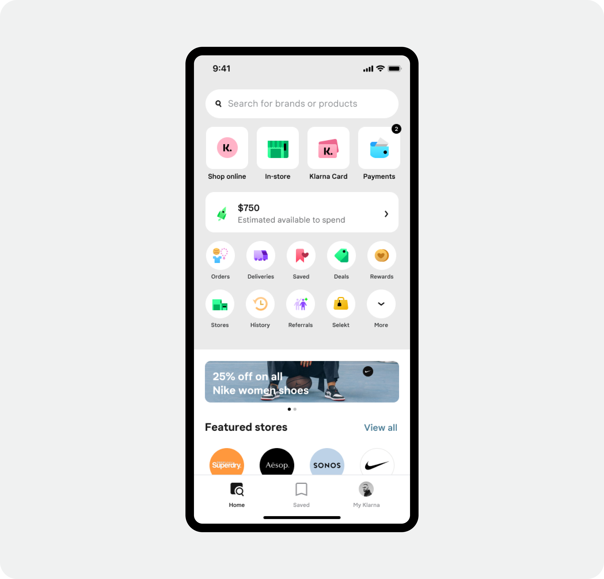
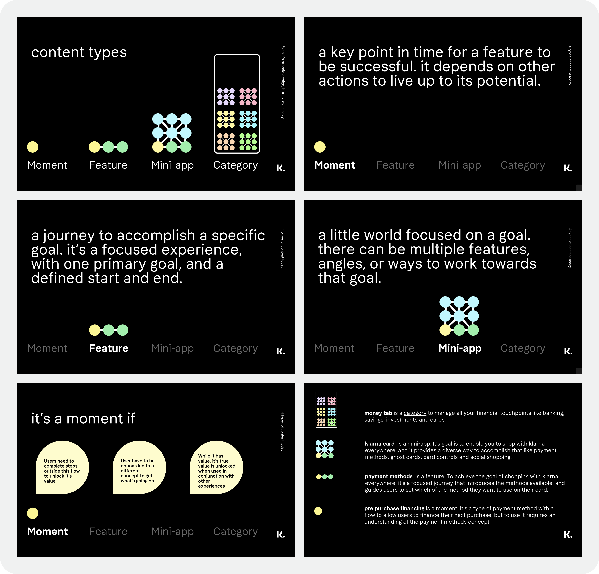
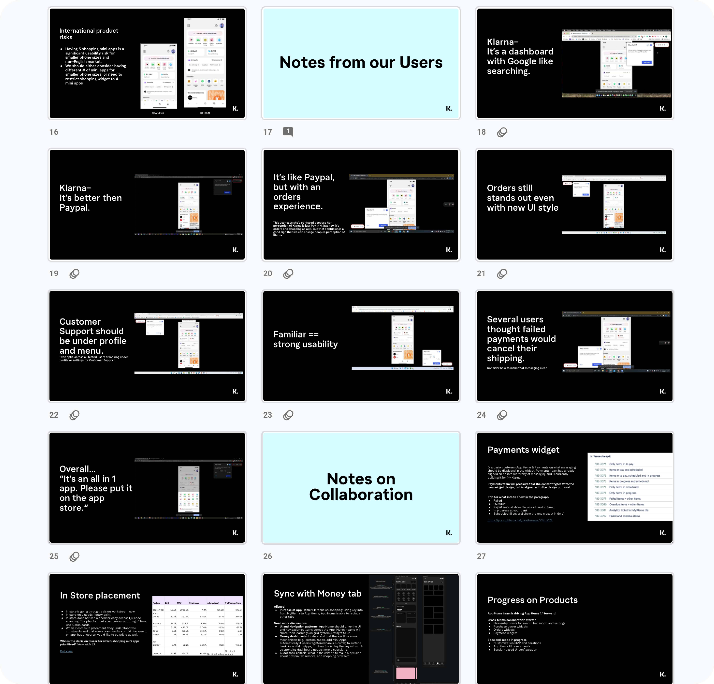
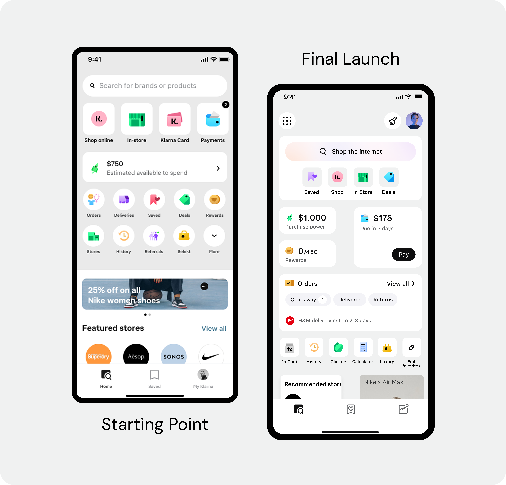
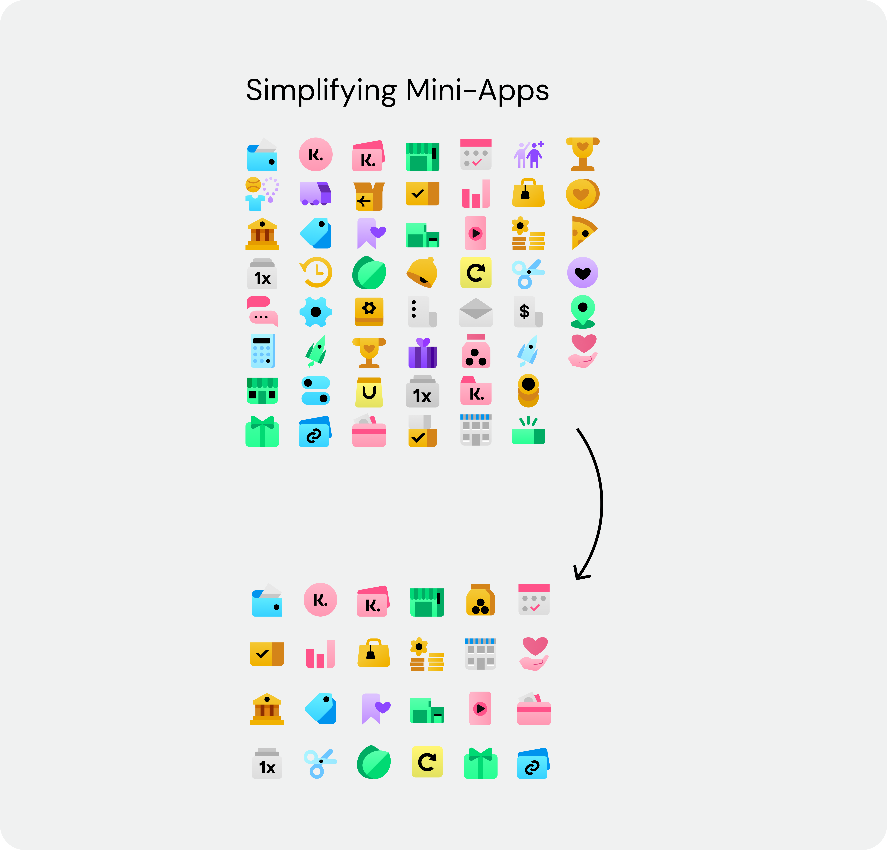
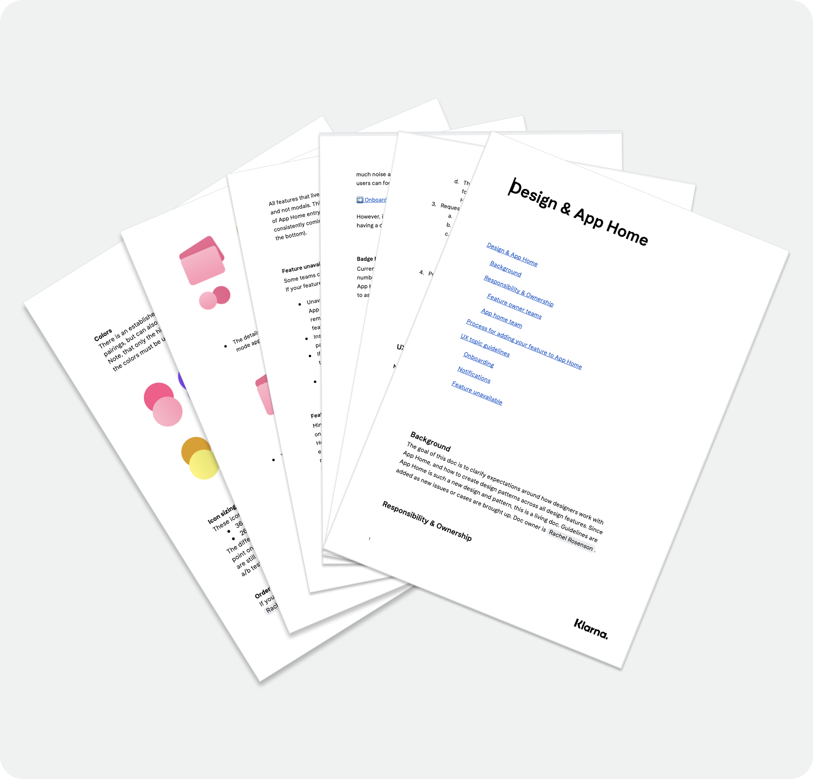

03 Case Study
UX Governance Model
Klarna was evolving from a "Pay Later" app into a Financial Super-App — and every PM wanted a piece of the home screen. Instead of playing referee, I designed a system to make the decisions for us.

The Problem
The home screen as political battleground
Every PM in the company was fighting for a spot on the home screen. Without a framework for making those calls, the answer was always the same: escalate to a Director. Slow, political, and completely disconnected from what users actually needed. The experience was being held hostage by the org chart.

Approach
From politics to principles
-
1
Designing a system, not a screen
The real problem wasn't which features to show — it was that we had no agreed criteria for deciding. I used Atomic Design principles to build a decision tree: to earn a home-screen spot, a feature had to prove it belonged to a "Category" or a "Moment." That shifted the pressure from the team — who'd become the reluctant referees — to the process itself.
-
2
First Principles leading forward
The harder sell was convincing Directors to hand over control. I pitched the model as a release — sign off on the rules once, and never referee a placement fight again. Most of them said yes immediately.

Design Process
A weekly rhythm built for fast decisions
I led a weekly design sprint process. We'd start with a kick-off brainstorm bringing product, engineering, and design together around a specific user goal. Design would take that input and turn it into concepts over the next day and a half.
From there, we'd build a prototype and test it with 6 users, then share findings with Directors for input at the end of the week, keeping the whole loop, from question to evidence, inside a single week.

Design Explorations
Three directions for App Home
Before landing on the governance model, the team explored several concepts for what App Home could become. Each one tested a different bet on what should earn the spotlight.
Favorites as the star
Goals
Challenges
Categories as a storyteller
Goals
Challenges
Data dashboard
Goals
Challenges
The Redesign
Redesign for users, not org charts
With the governance model in place, we could finally redesign the home screen for users instead of internal politics. The old home was a junk drawer — a flat grid of equal buttons with no hierarchy, no story, and no signal about what Klarna actually wanted you to do.
We regrouped everything by user intent: "Manage my Money" vs. "Find a Deal." Then rebuilt the visual hierarchy to match — so the most important actions felt important, and the rest got out of the way.

Scaling the Patterns
From a list of logos to an intent-driven home
The home-screen redesign was one part of it. The bigger unlock was using the same framework to standardize how mini-apps behaved across the platform — onboarding, notifications, error states. For the first time, third-party developers had clear guidelines to build to. For internal teams, it meant less reinventing the wheel on every new feature.


Impact & Scale
Simpler experience, faster decisions, better engagement
−42%
Homepage entry points — features moved to the right contextual home
−24%
Time-to-interact for users
+5%
Search usage, driven by more intentional discovery
Fewer
Director escalations — the system made the decisions so people didn't have to
Learning
When the org chart starts shaping the product, the answer isn't a better design — it's better rules for how decisions get made.